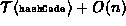

Data Structures and Algorithms
with Object-Oriented Design Patterns in Java
Data Structures and Algorithms
with Object-Oriented Design Patterns in Java
The method for inserting an item into a scatter table
using open addressing is actually quite simple--find an unoccupied array location and then put the item in that location.
To find an unoccupied array element,
the array is probed according to a probing sequence.
In this case, the probing sequence is linear probing.
Program  defines the methods needed
to insert an item into the scatter table.
defines the methods needed
to insert an item into the scatter table.
Program: OpenScatterTable class c, findUnoccupied, and insert methods.
The method c defines the probing sequence. As it turns out, the implementation required for a linear probing sequence is trivial. The method c is the identity function.
The purpose of the private method findUnoccupied
is to locate an unoccupied array position.
The findUnoccupied method probes the array
according the probing sequence determined by the c method.
At most n+1 probes are made,
where  is the number of items in the scatter table.
When using linear probing it is always possible to find an unoccupied
cell in this many probes as long as the table is not full.
Notice also that we do not search for an empty cell.
Instead, the search terminates when a cell is found,
the state of which is not occupied,
i.e., empty or deleted.
The reason for this subtlety has to do with
the way items may be removed from the table.
The findUnoccupied method returns a value between 0 and M-1,
where M is the length of the scatter table,
if an unoccupied location is found.
Otherwise, it throws an exception that indicates that the table is full.
is the number of items in the scatter table.
When using linear probing it is always possible to find an unoccupied
cell in this many probes as long as the table is not full.
Notice also that we do not search for an empty cell.
Instead, the search terminates when a cell is found,
the state of which is not occupied,
i.e., empty or deleted.
The reason for this subtlety has to do with
the way items may be removed from the table.
The findUnoccupied method returns a value between 0 and M-1,
where M is the length of the scatter table,
if an unoccupied location is found.
Otherwise, it throws an exception that indicates that the table is full.
The insert method takes a Comparable object and puts that object into the scatter table. It does so by calling findUnoccupied to determine the location of an unoccupied entry in which to put the object. The state of the unoccupied entry is set to occupied and the object is saved in the entry.
The running time of the insert method is determined by that of findUnoccupied. The worst case running time of findUnoccupied is O(n), where n is the number of items in the scatter table. Therefore, the running time of insert is .
 Copyright © 1998 by Bruno R. Preiss, P.Eng. All rights reserved.
Copyright © 1998 by Bruno R. Preiss, P.Eng. All rights reserved.